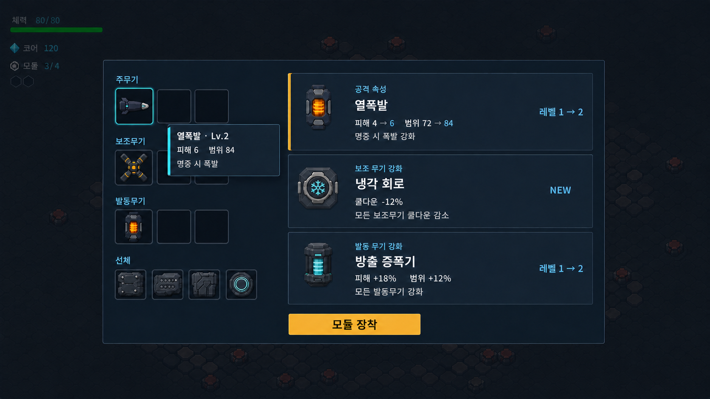

1. 발동무기 기반
EMP를 장착 가능한 한 종류로 일반화하고 종류 슬롯, 공통 cooldown·피해·범위 계약을 먼저 만든다. 중력장·충격파·광선은 같은 인터페이스를 공유한다.
Cardborne · Design report · 2026.08.12
현재 구현된 21장을 기준선으로 고정하고, 전 무기 공통 강화와 발동무기 확장, 빌드 완성형 카드를 단계별로 분리한 설계 보고서다.
승인된 시안은 장식 이미지가 아니라 배치 기준이다. 실제 UI는 기존 Cardborne 토큰과 승인된 카드 artwork를 사용하고, 아래 정보 밀도와 상호작용을 따른다.

NEW 또는 레벨 N → M은 오른쪽이다.피해 4 → 6 범위 72 → 84처럼 label과 값을 같은 문구로 묶는다. 빈 column을 만들지 않는다.정본: 구체적인 크기·상태·반응형 계약은 VISUAL_SYSTEM.md가 소유한다. 라이브 카드 효과와 제안 규칙은 vehicle_upgrade_catalog.md가 소유한다.
영구 해금 트리가 아니라 한 런 안에서 빌드가 자라는 구조다. 현재 카드는 기반, 우선 제안은 범용 강화와 새 선택지, 후속 실험은 여러 카드가 만나는 완성형으로 둔다.
해금 조건 원칙: 범용 강화는 해당 체계를 하나 이상 보유한 뒤 제안한다. 완성형은 관련 카드 2개 이상 또는 특정 레벨 조합을 요구한다. 정확한 수치와 최대 레벨은 프로토타입 성능·난이도 검증 전에는 고정하지 않는다.
현재 구현은 라이브 동작을 요약한다. 제안 항목은 의도만 정의하며 아직 코드·데이터에 없다. 검색과 필터는 결과를 숨길 뿐 문서 데이터를 바꾸지 않는다.
| 상태 | 카드 | 역할·효과 | 최대/조건 |
|---|---|---|---|
| 현재 구현 | 확산 총구split_muzzle | 측면탄을 추가해 주무기 총 피해량을 140%→165%→180%로 확장한다. | Lv.3 |
| 현재 구현 | 관통 탄환piercing_rounds | 주무기 탄환이 적을 레벨만큼 추가 관통한다. 단단한 엄폐물은 막는다. | Lv.4 |
| 우선 제안 | 주무기 증폭primary_amplifier | 탄종과 속성에 상관없이 모든 주무기 직접 피해를 높이는 범용 강화. | 주무기 보유 |
| 우선 제안 | 급속 급탄primary_cycle_tuner | 주무기 발사 간격을 줄인다. 투사체 수 폭증을 막는 최소 간격을 함께 둔다. | 주무기 보유 |
| 후속 실험 | 집중 포화projectile_fusion | 다중탄을 좁게 수렴시키거나 근거리에서 겹쳐 맞히는 주무기 완성형. | 확산+관통 |
| 상태 | 카드 | 역할·효과 | 최대/조건 |
|---|---|---|---|
| 현재 구현 | 추적 미사일homing_missiles | 기본 장착. 발사 수와 피해를 높이고 가능한 한 서로 다른 표적을 고른다. | Lv.3 |
| 현재 구현 | 전기장electric_field | 기체 주변의 적에게 지속 피해를 준다. 레벨에 따라 DPS와 반지름이 증가한다. | Lv.4 · 선택 |
| 현재 구현 | 회전 날개orbiting_blades | 기체 주위를 도는 날개가 접촉한 적을 반복 타격한다. | Lv.4 · 선택 |
| 현재 구현 | 후방 기뢰drop_mines | 이동하면서 지나온 방향에 자동 설치한다. 대시 발동 카드가 아니다. | Lv.4 · 선택 |
| 현재 구현 | 후방 레이저rear_laser | 주무기 조준 방향의 정확히 180° 뒤로 주기적인 관통 광선을 쏜다. | Lv.3 · 선택 |
| 현재 구현 | 전격 포격storm_barrage | 기체에서 떨어진 위협 밀집 지점을 경고한 뒤 낙뢰로 공격한다. | Lv.3 · 선택 |
| 우선 제안 | 보조 냉각 회로secondary_coolant | 장착한 모든 보조무기의 발동 간격을 비율로 줄이는 범용 강화. | 보조 1종+ |
| 우선 제안 | 보조 출력 증폭secondary_amplifier | 장착한 모든 보조무기의 직접·지속 피해를 공통 규칙으로 높인다. | 보조 1종+ |
| 우선 제안 | 보조 표적 연산secondary_targeting | 자동 무기의 탐색·재탐색 거리를 높여 빈 공격과 뒤늦은 표적 전환을 줄인다. | 보조 1종+ |
| 후속 실험 | 동기 표적화synchronized_targeting | 여러 보조무기가 같은 우선 표적을 연속 공격할 때 추가 효과를 만든다. | 보조 2종+ |
| 후속 실험 | 뇌우 핵thunder_core | 전격 포격과 전기·속성 효과가 이어질 때 제한된 연쇄 낙뢰를 만든다. | 전격 조합 |
| 후속 실험 | 지뢰 살포기mine_layer | 기뢰 배치를 짧은 띠 또는 묶음으로 바꿔 추격 경로를 더 분명하게 차단한다. | 기뢰 고레벨 |
| 상태 | 카드 | 역할·효과 | 최대/조건 |
|---|---|---|---|
| 현재 구현 | 열폭발thermal_burst | 주무기 직접 명중 지점 주변에 작은 폭발 피해를 준다. | Lv.4 · 독점 |
| 현재 구현 | 독 부여bio_toxin | 적격 공격이 최대 3중첩의 지속 피해를 건다. | Lv.4 · 독점 |
| 현재 구현 | 냉기 부여cryo_slow | 적격 공격이 이동·공격 속도를 낮춘다. 보스에는 절반만 적용한다. | Lv.3 · 독점 |
| 우선 제안 | 전격 부여arc_conduction | 선택 가능한 네 번째 독점 속성. 명중 시 가까운 표적으로 제한된 연쇄 피해를 전달한다. | 속성 미선택 |
| 후속 실험 | 속성 공명elemental_resonance | 선택한 속성 하나의 고유 강점을 증폭하는 공통 완성형. 속성 혼합은 허용하지 않는다. | 속성 고레벨 |
현재 상태: Shift의 EMP는 기본 액션이며 업그레이드 카드가 아니다. 아래 7장은 모두 미구현 제안이다.
| 상태 | 카드 | 역할·효과 | 최대/조건 |
|---|---|---|---|
| 우선 제안 | 중력 붕괴장gravity_collapse | 원거리 지점에 끌어당김과 피해 영역을 만드는 새 발동무기 종류. | 종류 선택 |
| 우선 제안 | 운동 충격파kinetic_shockwave | 기체 주변의 적을 밀어내고 피해를 주는 방어형 발동무기 종류. | 종류 선택 |
| 우선 제안 | 관통 광선piercing_lance | 조준 방향의 긴 직선 구역을 즉시 공격하는 공격형 발동무기 종류. | 종류 선택 |
| 우선 제안 | 발동 냉각 회로active_coolant | EMP를 포함해 장착한 발동무기의 재사용 대기시간을 줄인다. | 발동무기 보유 |
| 우선 제안 | 방출 증폭기active_amplifier | 종류에 상관없이 발동무기의 피해를 높인다. | 발동무기 보유 |
| 우선 제안 | 범위 확장기active_radius | 원형 반지름 또는 광선 폭처럼 발동무기의 유효 범위를 확대한다. | 발동무기 보유 |
| 우선 제안 | 지속 제어기active_duration | 기절·끌어당김·잔류 영역 등 발동무기의 지속 또는 제어 강도를 높인다. | 발동무기 보유 |
| 상태 | 카드 | 역할·효과 | 최대/조건 |
|---|---|---|---|
| 현재 구현 | 주행 속도chassis_speed | 기체의 기본 이동 속도에 단계별 배율을 적용한다. | Lv.3 |
| 현재 구현 | 수거 범위pickup_radius | 경험치 조각을 끌어당기는 반지름을 높인다. | Lv.3 |
| 현재 구현 | 장갑 내구도hull_integrity | 최대 내구도를 높이고 획득 시 15를 즉시 회복한다. | Lv.3 |
| 현재 구현 | 흡혈lifesteal | 실제 적용한 플레이어 피해의 일부를 공통 회복 예산 안에서 회복한다. | Lv.2 |
| 현재 구현 | 과잉 회복 실드overflow_barrier | 선체가 가득 찼을 때 초과 회복량 일부를 8초 실드로 바꾼다. | Lv.3 |
| 우선 제안 | 대시 냉각 회로dash_coolant | 대시 재사용 대기시간을 줄여 이동·공격 연계 빌드를 안정시킨다. | 기본 대시 |
| 우선 제안 | 방어막 효율barrier_efficiency | 실드 상한·유지시간·보존율 중 명시된 항목을 강화한다. | 실드 보유 |
| 후속 실험 | 방어막 반응로barrier_reactor | 실드가 활성화된 동안 공격 또는 발동무기에 제한된 보너스를 준다. | 실드+공격 |
| 후속 실험 | 생존 반응로survival_reactor | 낮은 체력·흡혈·실드가 순환하도록 만드는 생존 빌드 완성형. | 생존 카드 2+ |
| 상태 | 카드 | 역할·효과 | 최대/조건 |
|---|---|---|---|
| 현재 구현 | 치명 조준critical_targeting | 직접 피해 공격이 재현 가능한 확률 판정으로 2배 피해를 준다. | Lv.3 |
| 현재 구현 | 거리 양극화range_polarization | 260 이내 또는 620 이상에서 피해가 증가하고 중간 거리는 그대로다. | Lv.3 |
| 현재 구현 | 대시 증폭dash_overdrive | 대시 종료 뒤 2초 동안 모든 적격 공격 피해가 증가한다. | Lv.3 |
| 현재 구현 | 대시 잔류장dash_afterburn_field | 대시 시작점부터 실제 종료점까지 전체 경로에 지속 피해 장판을 만든다. | Lv.3 |
| 현재 구현 | 위기 증폭last_stand_amplifier | 체력이 낮을수록 피해가 점진 증가하고 25% 이하에서 최대가 된다. | Lv.3 |
| 우선 제안 | 연속 명중 보정combo_calibration | 같은 표적을 연속으로 맞힐 때 제한된 누적 피해 보너스를 준다. | 직접 공격 |
| 우선 제안 | 방어막 파쇄shield_breaker | 보호막·장갑이 있는 적에 대한 피해 또는 관통 효율을 높인다. | 우선 표적 |
| 우선 제안 | 마무리 프로토콜execution_protocol | 체력이 낮은 적에게 추가 피해를 줘 전투가 늘어지는 구간을 줄인다. | 공격 카드 |
| 후속 실험 | 냉각 사격cooled_shot | 공격을 잠시 멈춘 뒤 첫 타격을 강화해 연사 일변도와 다른 리듬을 만든다. | 공격 간격 조건 |
카드 수를 한 번에 늘리기보다 비어 있는 선택 축과 범용 강화부터 채운다. 새 효과는 기존 성능 예산과 조우 난이도를 다시 검증해야 한다.
EMP를 장착 가능한 한 종류로 일반화하고 종류 슬롯, 공통 cooldown·피해·범위 계약을 먼저 만든다. 중력장·충격파·광선은 같은 인터페이스를 공유한다.
주무기와 보조무기의 피해·간격·표적 연산 카드를 추가한다. 기존 개별 무기 카드를 대체하지 않고 여러 빌드가 공통으로 사용할 중간 선택지를 만든다.
동기 표적화, 뇌우 핵, 생존 반응로처럼 두 체계가 만나는 카드는 획득 조건과 화면 표시가 검증된 뒤 제한적으로 제안한다.
먼저 만들 카드: 발동 냉각 회로, 방출 증폭기, 범위 확장기, 보조 냉각 회로, 보조 출력 증폭, 주무기 증폭. 기존 체계를 그대로 강화하므로 효과 비교와 밸런스 검증이 가장 명확하다.
scripts/cards/vehicle_upgrade_catalog.gd. 현재 21장·68레벨 상태, 속성 하나, 선택형 보조무기 최대 두 종류가 정본이다.